Duelists are self-suffiecient fraggers who their team expects, through abilities and skills, to get high frags and seek out engagements first
| Agent | 1st Ability | 2nd Ability | Signature Ability | Ultimate |
|---|---|---|---|---|
|
|
INSTANTLY throw a projectile that expands into a brief vision-blocking cloud on impact with a surface. HOLD the ability key to curve the smoke in the direction of your crosshair. |
INSTANTLY propel Jett high into the air. |
INSTANTLY propel Jett in the direction she is moving. If Jett is standing still, she will propel forward. |
EQUIP a set of highly accurate throwing knives. FIRE to throw a single knife and recharge knives on a kill. ALTERNATE FIRE to throw all remaining daggers but does not recharge on a kill. |
|
|
FIRE two energy lines forward on the ground that extend a short distance or until they hit a surface. The lines rise into two walls of static electricity that block vision and damage enemies passing through them. |

INSTANTLY throw an energy bolt that bounces once. Upon hitting each surface, the bolt electrifies the ground below with a concussive blast. |
INSTANTLY channel Neon's high power for increased speed. When charged, ALT FIRE to trigger an electric slide. Slide charge resets every two kills. |
Unleash Neon's full power and speed for a short duration. FIRE to channel the power into a deadly lightning beam with high movement accuracy. |
|
|
EQUIP a flame wall. FIRE to create a line of flames that moves forward, creating a wall that blocks vision and damages players passing through it. HOLD FIRE to bend the wall in the direction of your crosshair. |

EQUIP a flare orb that takes a curving path and detonates shortly after throwing. FIRE to curve the flare orb to the left, detonating and blinding any player who sees the orb. ALTERNATE FIRE to curve the flare orb to the right. |
EQUIP a fireball. FIRE to throw a fireball that explodes after a set amount of time or upon hitting the ground, creating a lingering fire zone that damages enemies. |

INSTANTLY place a marker at Phoenix's location. While this ability is active, dying or allowing the timer to expire will end this ability and bring Phoenix back to this location with full health. |
|
|

EQUIP a Boom Bot. FIRE will deploy the bot, causing it to travel in a straight line on the ground, bouncing off walls. The Boom Bot will lock on to any enemies in its frontal cone and chase them, exploding for heavy damage if it reaches them. |

INSTANTLY throw a Blast Pack that will stick to surfaces. RE-USE the ability after deployment to detonate, damaging and moving anything hit. |
EQUIP a cluster grenade. FIRE to throw the grenade, which does damage and creates sub-munitions, each doing damage to anyone in their range. |
EQUIP a rocket launcher. FIRE shoots a rocket that does massive area damage on contact with anything. |
|
|
EQUIP an ethereal, destructible eye. ACTIVATE to cast the eye a short distance forward. The eye will Nearsight all enemies who look at it. |
INSTANTLY consume a nearby Soul Orb, rapidly healing for a short duration. Health gained through this skill exceeding 100 will decay over time. If Empress is active, this skill will automatically cast and not consume the Soul Orb. |
INSTANTLY consume a nearby Soul Orb, becoming intangible for a short duration. If Empress is active, also become invisible. |
INSTANTLY enter a frenzy, increasing firing, equip and reload speed dramatically. Grants infinite charges of Soul Harvest abilities. When an enemy dies to Reyna, or dies within 3 seconds of taking damage from Reyna, the duration is renewed. |
|
|
EQUIP an echo that transforms into a mirror image of Yoru when activated. FIRE to instantly activate the mirror image and send it forward. ALT FIRE to place an inactive echo. USE to transform an inactive echo into a mirror image and send it forward. Mirror images explode in a blinding flash when destroyed by enemies. |
EQUIP to rip an unstable dimensional fragment from reality. FIRE to throw the fragment, activating a flash that winds up once it collides with a hard surface in world. |

EQUIP to harness a rift tether. FIRE to send the tether out moving forward. ALT FIRE to place a tether in place. ACTIVATE to teleport to the tether's location. USE to trigger a fake teleport. |

EQUIP a mask that can see between dimensions. FIRE to drift into Yoru's dimension, unable to be affected or seen by enemies from the outside. |
Initiators challenge angles by setting up their team to enter contested ground and push defenders away
| Agent | 1st Ability | 2nd Ability | Signature Ability | Ultimate |
|---|---|---|---|---|
|
|

EQUIP a fusion charge. FIRE the charge to set a slow-acting burst through the wall. The burst does heavy damage to anyone caught in its area. |
EQUIP a blinding charge. FIRE the charge to set a fast-acting burst through the wall. The charge detonates to blind all players looking at it. |
EQUIP a seismic blast. HOLD FIRE to increase the distance. RELEASE to set off the quake, dazing all players in its zone and in a line up to the zone. |
 EQUIP a seismic charge. FIRE to send a cascading quake through all terrain in a large line. The quake dazes and knocks up anyone caught in it. |
|
|

EQUIP an explosive fragment. FIRE to throw. The fragment sticks to the floor and explodes multiple times, dealing near lethal damage at the center with each explosion. |
 EQUIP a flash grenade. FIRE to throw. The flash grenade explodes after a short fuse, blinding anyone in line of sight. |
 EQUIP a suppression blade. FIRE to throw. The blade sticks to the first surface it hits, winds up, and suppresses anyone in the radius of the explosion. |

INSTANTLY overload with polarized radianite energy that pulses from KAY/O in a massive radius. Enemies hit with pulses are suppressed for a short duration. While overloaded, KAY/O gains combat stim and can be re-stabilized if downed. |
|
|
EQUIP a healing trinket. HOLD FIRE to channel, healing allies in range and line of sight. Can be reused until her healing pool is depleted. Skye cannot heal herself. |

EQUIP a Tasmanian tiger trinket. FIRE to send out and take control of the predator. While in control, FIRE to leap forward, exploding in a concussive blast and damaging directly hit enemies. |
EQUIP a hawk trinket. FIRE to send it forward. HOLD FIRE to guide the hawk in the direction of your crosshair. RE-USE while the hawk is in flight to transform it into a flash that plays a hit confirm if an enemy was within range and line of sight. |
EQUIP a Seeker trinket. FIRE to send out three Seekers to track down the three closest enemies. If a Seeker reaches its target, it nearsights them. |
|
|
EQUIP an owl drone. FIRE to deploy and take control of movement of the drone. While in control of the drone, FIRE to shoot a marking dart. This dart will reveal the location of any player struck by the dart. |

EQUIP a bow with shock bolt. FIRE to send the explosive bolt forward, detonating upon collision and damaging players nearby. HOLD FIRE to extend the range of the projectile. ALTERNATE FIRE to add up to two bounces to this arrow. |
EQUIP a bow with recon bolt. FIRE to send the recon bolt forward, activating upon collision and revealing the location of nearby enemies caught in the line of sight of the bolt. Enemies can destroy this bolt. HOLD FIRE to extend the range of the projectile. ALTERNATE FIRE to add up to two bounces to this arrow. |

EQUIP a bow with three long-range, wall-piercing energy blasts. FIRE to release an energy blast in a line in front of Sova, dealing damage and revealing the location of enemies caught in the line. This ability can be RE-USED up to two more times while the ability timer is active. |
Sentinels are defensive experts who can lock down areas and watch flanks, both on attacker and defender rounds
| Agent | 1st Ability | 2nd Ability | Signature Ability | Ultimate |
|---|---|---|---|---|
|
|
PLACE a trap that scans for enemies. When a visible enemy comes in range, the trap counts down and then destabilizes the terrain around them, creating a lingering field that slows players caught inside of it. |
ACTIVATE to equip a heavy pistol. ALT FIRE with the pistol equipped to aim down sights. |
PLACE two teleport anchors. While on the ground and in range of an anchor, REACTIVATE to quickly teleport to the other anchor. Anchors can be picked up to be REDEPLOYED. |
ACTIVATE to summon a powerful, custom sniper rifle that will kill an enemy with any direct hit. Killing an enemy creates a lingering field that slows players caught inside of it. |
|
|

EQUIP a trapwire. FIRE to place a destructible and covert tripwire at the targeted location, creating a line that spans between the placed location and the wall opposite. Enemy players who cross a tripwire will be tethered, revealed, and dazed after a short period if they do not destroy the device in time. This ability can be picked up to be REDEPLOYED. |
INSTANTLY toss the cyber cage in front of Cypher. ACTIVATE to create a zone that blocks vision and plays an audio cue when enemies pass through it. |
EQUIP a spycam. FIRE to place the spycam at the targeted location. RE-USE this ability to take control of the camera's view. While in control of the camera, FIRE to shoot a marking dart. This dart will reveal the location of any player struck by the dart. |
INSTANTLY use on a dead enemy player in your crosshairs to reveal the location of all living enemy players. |
|
|
EQUIP a Nanoswarm grenade. FIRE to throw the grenade. Upon landing, the Nanoswarm goes covert. ACTIVATE the Nanoswarm to deploy a damaging swarm of nanobots. |

EQUIP a covert Alarmbot. FIRE to deploy a bot that hunts down enemies that get in range. After reaching its target, the bot explodes and applies Vulnerable to enemies in the area. HOLD EQUIP to recall a deployed bot. |
EQUIP a Turret. FIRE to deploy a turret that automatically fires at enemies in a 180 degree cone. HOLD EQUIP to recall the deployed turret. |
EQUIP the Lockdown device. FIRE to deploy the device. After a long windup, the device Detains all enemies caught in the radius. The device can be destroyed by enemies. |
|
|
EQUIP a barrier orb. FIRE places a wall that fortifies after a few seconds. ALT FIRE rotates the targeter. |
EQUIP a slowing orb. FIRE to throw a slowing orb forward that detonates upon landing, creating a lingering field that slows players caught inside of it. |
EQUIP a healing orb. FIRE with your crosshairs over a damaged ally to activate a heal-over-time on them. ALT FIRE while Sage is damaged to activate a self heal-over-time. |

EQUIP a resurrection ability. FIRE with your crosshairs placed over a dead ally to begin resurrecting them. After a brief channel, the ally will be brought back to life with full health. |
Controllers are experts in slicing up dangerous territory to set their team up for success.
| Agent | 1st Ability | 2nd Ability | Signature Ability | Ultimate |
|---|---|---|---|---|
|
|
ACTIVATE a Star to form a Gravity Well. Players in the area are pulled toward the center before it explodes, making all players still trapped inside vulnerable. |

ACTIVATE a Star to detonate a Nova Pulse. The Nova Pulse charges briefly then strikes, concussing all players in its area. |
ACTIVATE a Star to transform it into a Nebula (smoke). USE a Star to Dissipate it, returning the Star to be placed in a new location after a delay. Dissipate briefly forms a fake Nebula at the Star’s location before returning. |
When Cosmic Divide is charged, use SECONDARY FIRE in Astral Form to begin aiming it, then PRIMARY FIRE to select two locations. An infinite Cosmic Divide connects the two points you select. Cosmic Divide blocks bullets and heavily dampens audio. |
|
|
INSTANTLY toss a stim beacon in front of Brimstone. Upon landing, the stim beacon will create a field that grants players RapidFire and a speed boost. |
EQUIP an incendiary grenade launcher. FIRE to launch a grenade that detonates as it comes to a rest on the floor, creating a lingering fire zone that damages players within the zone. |
EQUIP a tactical map. FIRE to set locations where Brimstone's smoke clouds will land. ALTERNATE FIRE to confirm, launching long-lasting smoke clouds that block vision in the selected area. |
EQUIP a tactical map. FIRE to launch a lingering orbital strike laser at the selected location, dealing high damage-over-time to players caught in the selected area. |
|
|
EQUIP a shrouded step ability and see its range indicator. FIRE to begin a brief channel, then teleport to the marked location. |

EQUIP a blinding orb. FIRE to throw it forward, briefly reducing the vision range and deafening all players it touches. This projectile can pass through walls. |

EQUIP a shadow orb, entering a phased world to place and target the orbs. PRESS the ability key to throw the shadow orb to the marked location, creating a long-lasting shadow sphere that blocks vision. HOLD FIRE while targeting to move the marker further away. HOLD SECONDARY FIRE while targeting to move the marker closer. PRESS RELOAD to toggle normal targeting view. |

EQUIP a tactical map. FIRE to begin teleporting to the selected location. While teleporting, Omen will appear as a Shade that can be destroyed by an enemy to cancel his teleport, or press EQUIP for Omen to cancel his teleport. |
|
|
EQUIP a tactical map. FIRE to begin teleporting to the selected location. While teleporting, Omen will appear as a Shade that can be destroyed by an enemy to cancel his teleport, or press EQUIP for Omen to cancel his teleport. |
EQUIP a gas emitter. FIRE to throw the emitter that perpetually remains throughout the round. RE-USE the ability to create a toxic gas cloud at the cost of fuel. This ability can be RE-USED more than once and can be picked up to be REDEPLOYED. |
EQUIP a gas emitter launcher. FIRE to deploy a long line of gas emitters. RE-USE the ability to create a tall wall of toxic gas at the cost of fuel. This ability can be RE-USED more than once. |

EQUIP a chemical sprayer. FIRE to spray a chemical cloud in all directions around Viper, creating a large cloud that reduces the vision range of players and maximum health of enemies inside of it. HOLD the ability key to disperse the cloud early. |